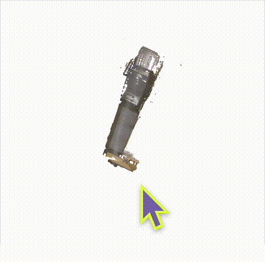

About the Project
This website showcases visual results and demos from the CV final project. Explore our experiments, reconstructions, and visualizations below.
Video 1: megasam point cloud

Video 2: mast3r
Video 3: megasam to 2dgs

Video 3: colmap to 2dgs

Video 4: cleaned mesh

Video 5: artifacts

Video 6: dipped floors